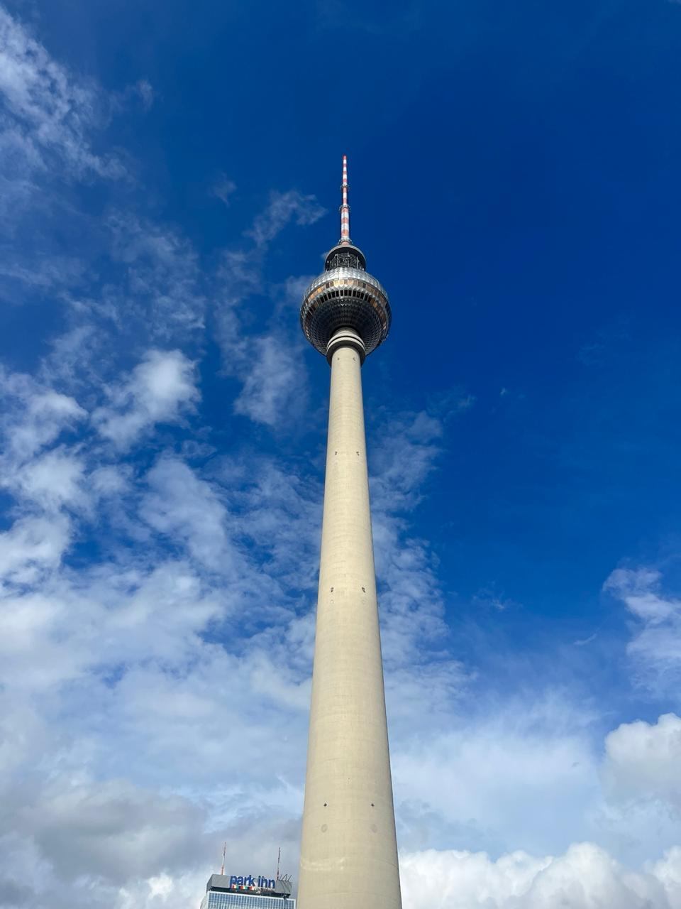
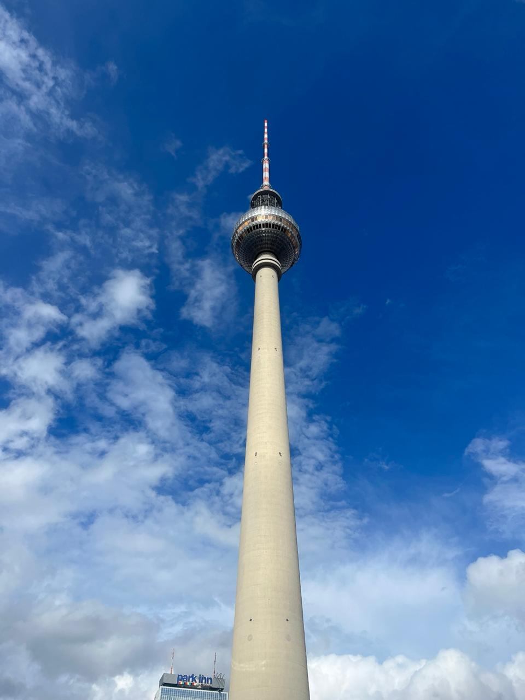

Minha viagem dos 15 anos
Nunca vou esquecer o mês incrível que passei na Alemanha e a semana mágica em Paris. Tudo começou em Stralsund, uma cidadezinha charmosa no norte da Alemanha, onde me aventurei por ruas de paralelepípedos e casinhas coloridas. Mas o melhor mesmo foi conhecer três meninas maravilhosas em uma feirinha local: Nour, Sara e Lama. Elas eram cheias de energia, me mostraram lugares secretos da cidade e riamos muito juntas.

Um final de semana em Berlim foi suficiente para me deixar apaixonada pela vibe da cidade – o Muro, a história pulsante, a mistura de culturas. Depois, ainda tive o prazer de relaxar na praia de Binz, com aquele mar gelado do Báltico, e passear por Schwerin, com seu castelo de contos de fadas.
Na Alemanha, a comida foi uma aventura à parte: currywurst picante, döner kebab gigante (salvação depois de uma noite de festa) e até aquela famosa carne de porco crua com pão – confesso que precisei de coragem para experimentar!
Mas uma das experiências mais engraçadas foi conhecer um time de meninos entre 8 e 12 anos que jogavam futsal. Quando descobriram que eu era brasileira, me bombardearam com perguntas sobre o Neymar: "Ele é seu amigo?", "Já jogou com ele?" – eu ria demais tentando explicar que o Brasil é grande, mas não tanto assim!

Depois desse mês incrível, parti para Paris, e nossa… que cidade! Me senti em um filme caminhando pelo Louvre, vendo a Mona Lisa de perto (e a multidão ao redor dela), explorando os jardins imensos de Versalhes e subindo na Torre Eiffel, que brilhou magicamente à noite. O Arco do Triunfo me deixou sem fôlego, e a comida… ah, a comida! Provei escargot (não gostei), tartare (eu amei!) e crepes franceses em cada esquina.
Foi uma viagem cheia de histórias, sabores, pessoas incríveis e momentos que vou guardar para sempre. Mal posso esperar pela próxima aventura!


 
